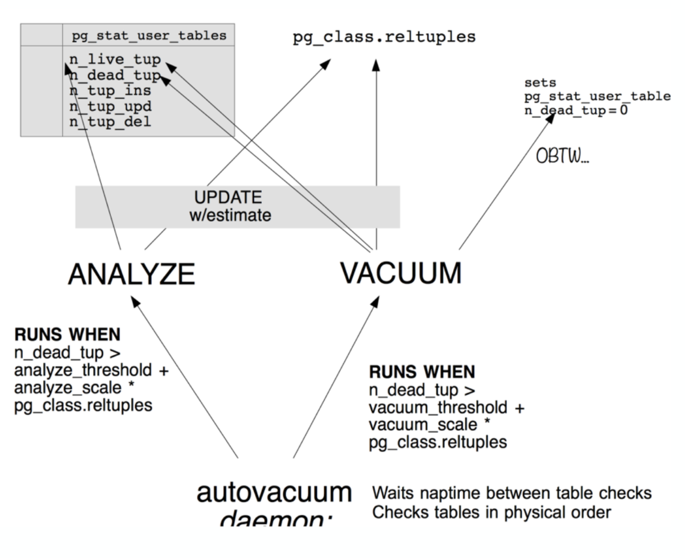

Autovacuum¶
What is an autovacuum ?¶
It's an automatic vacuum !
A good reading to understand what is autovacuum and why it exists.
PostgreSQL is a MVCC database : what does that mean ?
A good reading (quite complete !) could be found here : http://momjian.us/main/writings/pgsql/mvcc.pdf.
BTW, you could have a look to all PDFs available in Momjian repo : http://momjian.us/main/writings/pgsql/.
The most important is to understand a MVCC database have a natural behavior to grow for ever if nothing is done.
Vacuum is a way :
- to free / reuse the space (pages) used by transactions once they are committed.
- to update tables statistics so the query planner could rely on good info (
ANALYZEcommand, see below for details) - to maintain the visibility map of what pages contain only tuples visible to all transaction or future one (to help vacuum process itself or help index scans).
Autovacuum is a PostgreSQL process to automate vacuum on databases.
To regain all possible space, we must execute a VACUUM FULL query, which needs an exclusive locks on the table : not easy in production environment !
Note
TRUNCATE command doesn't require to regain free space, so no auto VACUUM is launched after it.
Documentation
Official link to VACUUM command
Technical precision¶
People often assume that VACUUM is the process that should return the disk space to the file system. It does do this but only in very specific cases.
That used space is contained in page files that make up the tables and indexes (called objects from now on) in the Postgres database system. Page files all have the same size and differently sized objects just have as many page files as they need. If VACUUM happens to mark every row in a page file as unavailable AND that page also happens to be the final page for the entire object, THEN the disk space is returned to the file system.
If there is a single available row, or the page file is any other but the last one, the disk space is never returned by a normal VACUUM. This is bloat. See below for details.
What triggers Autovacuum ?¶
A worker seeks for tables with :
vacuum threshold = autovacuum_vacuum_threshold + autovacuum_vacuum_scale_factor * number of tuples
But it keeps also a trace of I/O "credits" that are consumed. When credits used exceed the autovacuum_vacuum_cost_limit then autovacuum pauses all workers for autovacuum_vacuum_cost_delay milliseconds.
Default factor autovacuum_vacuum_scale_factor = 0.2 is far too high for big tables. It couldn't help to control table bloating (see below for details).
.
Bloating¶
In MVCC database servers, tables updates, transactions uses spaces and need to be vacuumed to regain space. If it's not the case, table / index disk size possibly increase a lot : phenomenon named bloating.
It could be estimated by some queries : see details in the statistics page.
Bad cases could occur with PostgreSQL catalog tables themselves bloated !
Bloating could be bad because when a query is executed on a table, all rows visibility flags are checked to see if the row is actually available for the transaction, including rows of the bloated part.
To understand why bloating is not always bad could be found here.
A good example of investigation on table bloating cause : https://www.cybertec-postgresql.com/en/stale-statistics-cause-table-bloat/.
Index bloating¶
Index bloating is even worse than table bloating because an index points to items, not tuples so it doesn't know if an item points to dead tuple or not. Thus, bloated indexes are slower.
To refresh an index :
REINDEX INDEX the_index;
To refresh all indexes of table :
REINDEX TABLE the_table;
To refresh all indexes of all system tables :
REINDEX SYSTEM "the_database";
Time series¶
Of course, for time series, standard autovacuum is an issue because table is never empty and space could never be regained. Some rows could be re-used but occupied space will grow forever, even slowly.
Other solutions are described in this post : https://www.redpill-linpro.com/sysadvent/2017/12/08/pg_repack.html.
pg_repack¶
This project could be a good solution : https://github.com/reorg/pg_repack/.
Install on Debian
apt-get update && apt-get install -y postgresql-9.6-repack
Create an extension in the DB
psql -U my_user -h localhost -c "CREATE EXTENSION pg_repack" -d the_db
Launch pg_repack on a table
/usr/lib/postgresql/9.6/bin/pg_repack --user my_user --table=probes_global_statistics --jobs 5 the_db
Warning
Tables cleaned by pg_repack must have a primary key or not-null unique keys. Thus, netflow aggregation tables are not eligible for this : they don't have a primary key.
Analyze¶
ANALYZE table [column (, ...)] SQL command updates query planner statistic for this table. It's important to have up-to-date stats so the planner could compute efficient strategies.
It's not useful to frequently ANALYZE columns with a quite constant data distribution.
It's really important to frequently ANALYZE columns with increasing values, like timestamp for example.
Automatic analyze are triggered when the number of modified rows in a table exceeds
vacuum threshold = autovacuum_analyze_threshold + autovacuum_analyze_scale_factor * number of tuples
Documentation
Official link to ANALYZE command